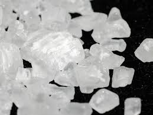

col col-2
col col-2
col col-3
col col-3
col col-3
Cloreto de Sodío
A utilidade do Cloreto de Sódio nos aquários de água doce tem dividido a classe dos aquaristas profissionais, enquanto tem confundido a maioria dos criadores caseiros e de primeira viagem. A literatura especializada em livros, sites e fóruns de aquarismo tem se esforçado em esclarecer muitos pontos objetivos sobre a questão do sal, ao mesmo tempo que tem propagado muitas lendas e mitos sobre o assunto, gerando muitos equívocos. A criação de várias espécies de peixes durante décadas, e o confronto de informações sobre o uso de sal marinho com a própria experiência aquarística nos possibilitam deixar aqui algumas contribuições sobre essa controversa temática.
Na natureza, os peixes e outros animais aquáticos evoluíram e passaram a viver em meios salinos, salobros e doces. A média de salinidade dos oceanos é 35g\L de sal, ou seja, a água do mar é uma solução de 3,5% de sal. Porém, em boa parte do litoral brasileiro, a salinidade da superfície do mar possui 37g\L de sal. A salinidade das águas salobras ou de estuário varia entre 0,5 a 30g\L, e a água chamada de doce possui salinidade próxima de zero (água de rios, riachos, fontes, poços, da chuva e das geleiras). Assim, a água salgada tornou-se tóxica para a maioria dos peixes de água doce, e vice-versa, embora haja peixes de hábitos migratórios que variam seu meio, vivendo ora em água doce, ora em salobra ou salgada (ex: salmões, tainhas, robalos, góbios entre outros). Os criadores de aquários salobros normalmente utilizam salinidades entre 12 e 18g\L. As várias espécies de peixes de água doce que criamos em nossos aquários podem passar toda a vida sem a mais leve sensação ou necessidade de “água salgada”. Falamos aqui do sal marinho comum, NaCl, e não dos diversos sais que existem em qualquer água de rio ou lago. Pelo menos, é bom saber que a maioria dos peixes de água doce consegue tolerar salinidades até 10g\L, por poucos dias, embora isso não seja necessário ocorrer. O que se diz, normalmente, é que o sal comum é útil ao aquarismo, sobretudo para a cura de doenças (como íctio, costia, doença do algodão, etc), servindo de “antibiótico natural”, e para amenizar o estresse dos peixes. A verdade aqui é que o sal pode mesmo diminuir os efeitos dos nitritos da água, tóxico aos peixes, mas quanto à cura de doenças, há muita discussão. Muitos defendem que o sal proporciona outros benefícios quando adicionado aos aquários:+ Ajuda a regular as trocas osmóticas dos peixes, estabilizando sua pressão interna de acordo com a externa; isso traz relaxamento aos peixes, ao melhorar sua circulação interna;
+ Diminui o estresse dos peixes após longas viagens, ou por alto nível de nitrito na água;
+ Pode ajudar a sarar ferimentos nos peixes, e protege a escama de muitas espécies;
+ Fornece cores vivas nos peixes;
+ Previne o surgimento de fungos e doenças (parasitas e bactérias) na água; o sal limpa as brânquias dos peixes de certos parasitas e vermes;
+ O sal previne e neutraliza a má biologia dos substratos (vermes e bactérias);
+ Serve para higienizar e limpar (tratar) troncos e objetos do aquário; realmente, o sal é um dos maiores esterilizadores de biologia conhecidos. Em contato com grande quantidade de NaCl, nenhum ser resiste.
Depois de tantas boas qualidades, há quem ache o sal um santo remédio para quase todos os males do aquarismo. Na realidade, falta muita comprovação científica sobre alguns desses benefícios. Mas uma coisa é segura: o mau uso de sal em tanques de água doce traz problemas tão graves quanto os que ele pretende resolver. Em geral, criadores descuidados e imprudentes passam a usar sal em seus aquários segundo vontade própria, sem critérios sérios. Os efeitos trágicos dessa prática logo aparecem, trazendo muitas perdas e angústia ao criador. Podemos destacar três erros crassos dos que fazem uso do NaCl em seus tanques:
- Usar sal em quantidades inapropriadas para a litragem de seu tanque, e em tempo contínuo, termina por agredir a biologia geral do sistema (pode matar as colônias de bactéria, plantas, peixes e moluscos);
- Não investigar sobre a tolerância de sal das espécies que cria; isso faz muitas espécies sofrerem e morrerem, pelo uso descontrolado de sal;
- Querer resolver todos os males dos peixes e do aquário com sal de cozinha; O criador desavisado acha que deve colocar sal de mesa nos aquários, um equívoco, pois este tipo de sal contém iodo (tóxico aos peixes), cálcio ou potássio, além de outros químicos, que podem desestabilizar os parâmetros da água do aquário e prejudicar os peixes. O sal a utilizar deve ser o marinho puro, usado para aquários marinhos (na falta deste, o sal grosso ou em pedra, também pode ser usado);
O conselho mais sensato que podemos dar aqui, é que muitos peixes de água doce, se tiverem uma boa filtragem de água, controle dos nitritos e amônia, além de comida boa e regular, na medida correta, podem nunca precisar receber sal na sua água. O uso de sal deve ocorrer em momentos específicos, por tempo limitado, e na quantidade correta. Claro, há peixes que até gostam (e vivem naturalmente) em água salobras, que devem receber sal permanentemente na água, das trocas, sobretudo. São os peixes ditos salobros ou brackish, que vivem melhor em ambientes estuarinos e mesmo salinos, mas que encontramos vendidos como espécies de água doce: os Góbios (como o Dorminhoco), os Poecilídeos (Molinésias, Espadas, Platis, Barrigudinhos, Guarús, Guppies ou Lebistes, Jordanelas), os Baiacus, os Gatos Colombiano e Jordani, os Monodactilos, os Rangas, Mexiricas, Toxotes e Datnioides, para falarmos nos principais. O restante dos peixes de aquário de água doce não vai tolerar altos níveis de NaCl na água (mais de 10g\L), a exemplo dos peixes de couro (sentem ardor e irritação na pele), de casca e muitos de escamas: os tetras em geral (como Neon, Mato-Grossos, do Congo, Pinguins, Hasemanias, Rodóstomus, etc), os Cascudos, Coridoras, Jundiás, Jacundás, Traíras, Gatos de Rio, Bótias, Lábeos, Otos, Comedores de Algas, Rásboras, Barbos em geral, Discos, Acarás Bandeira, Danios, Piranhas, Pacus, Ciclídeos em geral, entre outros, não toleram sal na água, pelo menos em níveis de água salobra ou acima disso, por muito tempo, continuadamente. Peixes de águas doce e mole, como Neons, sofrerão com aumento de salinidade: seu metabolismo será afetado, os rins serão sobrecarregados, os peixes gastarão mais energia para viver nesse meio, e assim, viverão menos. Já peixes como Bettas, Tricogasters, Carpas e Kinguios se mostram mais resistentes ao Cloreto de Sódio, durante tratamentos, mas dependendo do grau e tipo da doença, o sal sozinho não os salva da morte. Por exemplo, um Betta pode resistir cerca quatro dias em águas de salinidade 11,88 g\L, mas pode tolerar bem, e por mais tempo, meios aquáticos com 6-7g\L de sal.
Molinésia Balão (Poecilia latipinna)
No caso dos Poecilídeos, o sal pode ser um santo remédio contra doenças e água com nitritos. Nesta família (em seus dois gêneros principais, o Poecilia, com Guppies e Molinésias, e o Xiphophorus, com os Espadas e Platis), muita gente acha que apenas as Molinésias seriam peixes tolerantes ao sal. Essa vasta família de peixes vive desde regiões costeiras, em meio marinho, até estuários, lagunas, e mais para o interior, em rios, fontes e lagos, totalmente de água doce (nos EUA, México, Caribe e América do Sul, principalmente). Os detalhes que muitos desconhecem são que os poecilídeos resistem pouco ao nitrito, quando criados em água totalmente doce, e que devem ingressar nos aquários quando estes forem já maduros, com largo tempo de montados, para evitar intoxicação. Claro que se eles estiverem em água doce, morreriam se fossem lançados em água salgada, mas um pouco de sal na água dos poecilídeos os deixará mais à vontade, evitando bastante que adoeçam por causa da qualidade da água (uma colher de sopa = 16g de sal para cada 10L já é o suficiente para eles viverem melhor). Os criadores de espécies de Ciclídeos, como os do lago Malawi ou Tanganyica precisam adicionar sais na sua água, mas não confundir com NaCl. Na África, se os ciclídeos aprenderam a viver longe do mar e do sal, por que colocá-los nesse meio? Também é bom lembrar que os alevinos dessas espécies citadas vão tolerar bem menos sal na água. De fato, o uso de sal deve ser bem restrito, de acordo com a situação e as espécies em questão. O tratamento pode ser feito no aquário principal, ou em recipientes menores, com maior quantidade de sal, em banhos curtos (imersões em solução de 2% de sal), de 10 a 20 minutos, ou até 1 hora (sob vigilância do criador, nesse tempo). Qualquer anormalidade, do peixe passar mal no meio salino, deverá ser retirado logo e devolvido ao seu tanque normal. Os banhos devem ocorrer uma vez ao dia, por três dias seguidos. Caso não haja qualquer melhora, melhor parar com esse tratamento e buscar outro. Se houver melhora, pode ser continuado por mais 2 ou 3 dias (5-6 no total). Lembre apenas, que de nada adiantará esse tratamento se a água do aquário principal estiver degradada, ou com bactérias e parasitas. Barbo Xadrez (Puntius oligolepis)Parece que as escamas dos peixes os protegem contra os efeitos de aumento de salinidade da água, enquanto outras espécies de couro parecem sofrer mais, se condicionados na mesma salinidade. Para quem quer tratar um pequeno aquário com problemas de doenças, pode usar a medida prática de uma colher de sopa de sal para cada 5L de água do tanque, por uns 3 ou 4 dias, o que não fará muito efeito negativo nos peixes (em seguida, parar de colocar o sal e ir fazendo TPAs de 20% por vez, a cada 5-6 dias, com boa água descansada). Uma alta de nitrito pode ser amenizada, segundo alguns especialistas, com uma colher de sopa cheia de sal grosso marinho para cada 200L ou até 300L de água, aproximadamente. O sal não deve ser lançado sólido no aquário, mas dissolvido antes em uma porção da própria água do aquário, que depois é colocada nele, aos poucos. Acarás Discos e Bótias PalhaçoUso incorreto de sal em aquários pode prejudicar muitos peixes. Cuidado, pois o sal não evapora, mas se acumula no tanque, e nem pode ser filtrado pelos filtros comuns. Só sai com as TPAs, por isso, evite adicionar sal toda semana ou em todas as trocas. E ele é também fator de variação de oxigénio na água: quanto mais sal e maior temperatura, menos oxigênio dissolvido haverá na água (por exemplo, um aquário com temperatura de 28oC e salinidade de 10g\L, terá 7,38 mg\L de oxigênio. Os peixes começam a estressar com falta de oxigênio com 4mg\L desse elemento dissolvido na água, chegando a níveis críticos de falta de ar com 2mg\L ou menos). Pelo menos, o sal não altera o pH da água, nem mexe praticamente com a sua dureza, se for puro. Há controvérsias sobre isso, nas fontes. Alguns criadores afirmam que sobem o pH dos aquários adicionando sal marinho neles. O que se tem notado é que NaCl puro tem pH neutro, e em pequenas concentrações no aquário praticamente não afetará sua acidez. Se seus peixes não são salobros, como Poecilídeos ou Puffers (Baiacús), prefira tratar suas doenças com remédios, pois é sem dúvida mais seguro. Se você tem um aquário comunitário de várias espécies, pense bem antes de usar sal em caso de doenças ou água degradada. O melhor é separar o peixe doente, e em um aquário hospital, recorrer ao sal não combinado com medicamentos (que podem ser usados após esse tratamento). Veja se é necessário deixar o peixe lá ou esperar alguns minutos e retorná-lo ao aquário principal. Quanto à água ruim, faça TPAs de 20% a cada 5 dias, com água descansada da torneira, e reveja a quantidade de alimentação que tem dado aos seus peixes. Por fim, os radicalismos não são úteis para os aquários. O sal não pode ser a solução para tudo, mas também não deve ser banido do aquarismo, já que não se pode negar seus benefícios para os aquários e para nossos peixes. Devemos fazer uso dele apenas quando necessário, ou melhor, quando possível.
@copy:PABLO PICASSO LIMA DE OLIVEIRA>